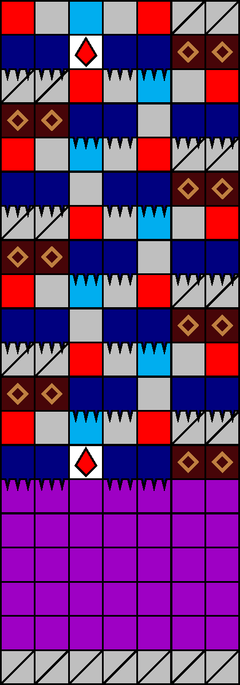
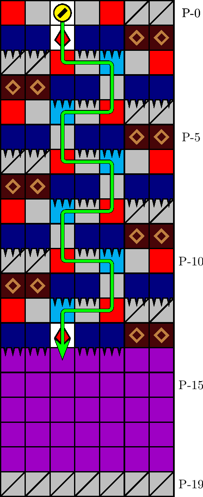

一般指針
エリア・ジグザグ


指針
ジグザグは，自然に潜行します．
解説
ジグザグとは，図 3.2.12.1 のエリアを指します． 1000 m型 44 行目に確率で出現します． P-1 行目の針と塊の配列によって同定されます．図 3.1.12.2 の経路が定型です．
0 列進入時において動作が滞った場合は，潜行の継続が針猶予に間に合わない恐れがあるため， ±1 列に向かって経路を即座に 1 マス引き返すことも有効です．


ジグザグは，自然に潜行します．
ジグザグとは，図 3.2.12.1 のエリアを指します． 1000 m型 44 行目に確率で出現します． P-1 行目の針と塊の配列によって同定されます．図 3.1.12.2 の経路が定型です．
0 列進入時において動作が滞った場合は，潜行の継続が針猶予に間に合わない恐れがあるため， ±1 列に向かって経路を即座に 1 マス引き返すことも有効です．